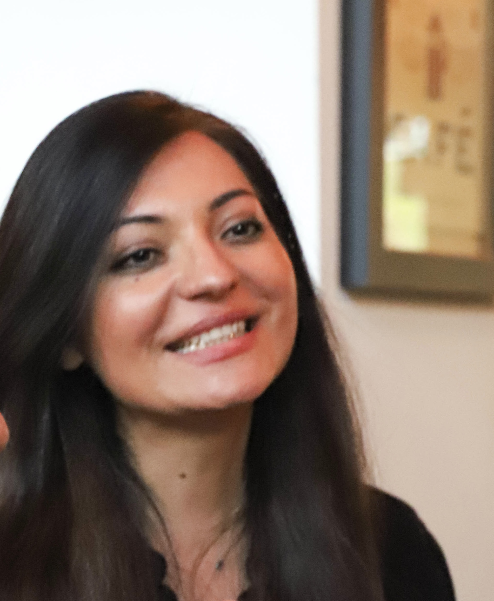

Mahtab Mahdavifar
Full-stack Web Developer
Copenhagen, Denmark
mhtbmahdavifar@gmail.com
0045 22 78 70 10
Profile
With years of experience working in international teams in four different countries and a background in Tech, I consider myself as an efficient communicator with a genuine interest in building products and reaching to consumers.
Skills
- Programming Languages (Ruby, SQL)
- Tools and Frameworks (Rails, Bootstrap, Stimulus, Heroku, API, Git, Github and Product Design (Figma, Trello))
- Project Management Skills (Communication Skills, Problem Solving, Project Planning, Prioritising, Time Management)
Education
Full-stack Web Development Bootcamp
HackYourFuture 04/2022 | Copenhagen, Denmark
-
34 weeks of intensive Full-stack Web Development training, developing various skills including but not limited to JavaScript, Relational Databases with MySQL and Query Builder KnexJS, NodeJS and React
Full-stack Web Development Bootcamp
Le Wagon 2022 | Amsterdam, The Netherlands
- 9 weeks full-time intensive coding bootcamp learning HTML, CSS, Bootstrap, JavaScript ES6, SQL, git, GitHub, Heroku and Ruby on Rails.
Ph.D in performance Studies
University of Malaya 2015 – 2020 |
Kuala Lumpur, Malaysia
- Years of field work in the Philippines exploring women involvement in Modern Theater
Professional Experience
Freelance Full-Stack Developer
2022 – present | Amsterdam, The Netherlands- Currently helping a client in the Real State Industry developing a web application for investors in the EU region. Working with Javascript, APIs and more.
Co-Founder and Product Owner, SaveCue
01/2022 – present | Amsterdam, The Netherlands- Developing a saving app which turns random and unexpected events and habits to saving
Freelance Soft-Skill Trainer, FluentCitizen
2020 – present | Copenhagen, Denmark- Been managing various aspect of my Training Business
- Been providing trainings including but not limited to Communication Skills, Negotiation Skills, Project Organisation and Business English.
- Taught more than 120 trainees from around the world
- Taught total hours more than 2000
Learning Innovation Consultant/ Program Coordinator, EMS Language Center
2017 – 2020 | Kuala Lumpur, Malaysia- Managing, marketing and supervising day to day teaching programs
- Conducting professional development workshops
- Working closely with marketing team
- Arranging problem-solving meetings